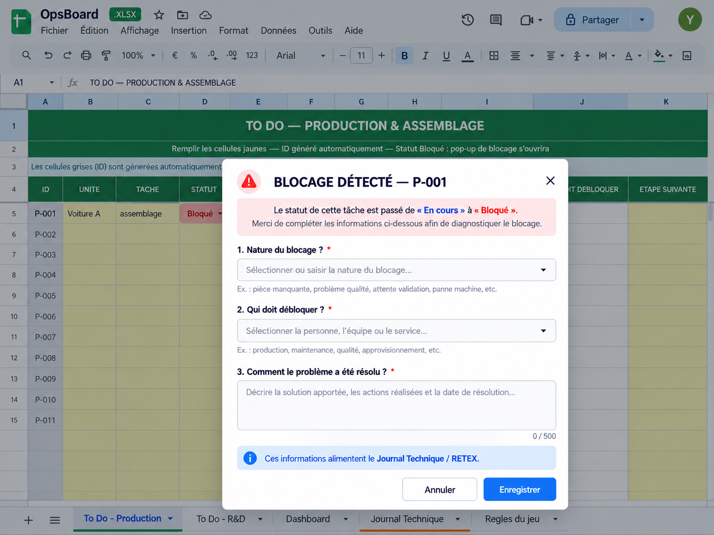
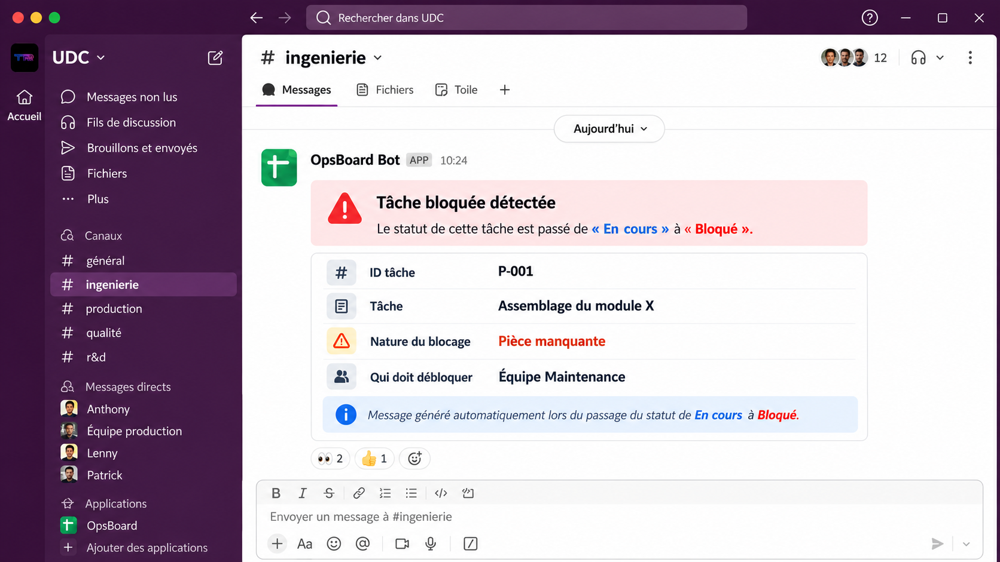

OpsBoard
Un système de pilotage conçu à partir de l’observation terrain pour rendre les priorités visibles, structurer les blocages et transformer les résolutions en connaissances réutilisables.
Poser les règles avant de construire l’outil
Le point de départ n’était pas Excel, mais le fonctionnement de l’équipe. J’ai d’abord défini quelques règles simples pour structurer la circulation de l’information et éviter que les blocages ou solutions restent dans des échanges isolés.
Une source commune
L’équipe renseigne les informations utiles au même endroit.
Un blocage = une action
Le problème doit être identifié et orienté vers la bonne personne.
Une résolution = du RETEX
Une solution utile doit pouvoir être retrouvée et réutilisée.
Un workflow commun pour chaque tâche
Lorsqu’une tâche est créée, Apps Script génère automatiquement un identifiant. Cet ID permet de relier la même tâche entre les vues opérationnelles, le Dashboard, les alertes Slack et le Journal Technique.

Quand une tâche se bloque
Lorsqu’une tâche passe de En cours à Bloqué, un pop-up apparaît automatiquement pour structurer le diagnostic autour de trois questions simples.
Quelle est la nature du blocage ?
Qui doit intervenir pour débloquer la situation ?
Comment le problème a-t-il été résolu ?
Pop-up de diagnostic
Le pop-up collecte les informations utiles au traitement du blocage puis à sa capitalisation.

Alerte automatique
Le webhook Slack transmet l’ID de la tâche, la nature du blocage et la personne ou équipe devant intervenir.

Transformer la résolution en RETEX
Une fois le problème résolu, les informations utiles sont intégrées au Journal Technique afin de conserver une trace exploitable pour les situations futures.
Enrichir le Journal Technique

Une lecture synthétique de l’activité
Le Dashboard consolide automatiquement les informations issues des To Do Production et R&D afin de rendre visibles l’avancement, les tâches actives, les priorités et les blocages.

Sous le capot
Voir. Agir. Capitaliser.
Voir
Une vue claire des tâches, des priorités et des blocages.
Agir
L’information utile arrive à la personne qui doit intervenir.
Capitaliser
Les résolutions deviennent des connaissances réutilisables.